# install.packages("Stat2Data")
# install.packages("RColorBrewer")
# install.packages("jtools")
# install.packages("viridis")
# install.packages("ggthemes")
# install.packages("xkcd")
library(Stat2Data)
library(RColorBrewer)
library(jtools)
library(viridis)
library(xkcd)
library(ggthemes)
library(tidyverse)
set.seed(012922)ggplot Examples
Overview
This chapter is a supplemental chapter to Lesson 04 containing many more ggplot2 examples and a thorough discussion of colour palettes. These examples also make use of some other R packages we haven’t seen yet. If you need some of these packages, make sure to “uncomment” the install.packages() call for the packages you need.
Data
We will be using the FirstYearGPA data set from the Stat2Data:: package. This dataset includes several continuous and categorical variables related to GPA in the first year of college.
data("FirstYearGPA")
glimpse(FirstYearGPA)Rows: 219
Columns: 10
$ GPA <dbl> 3.06, 4.15, 3.41, 3.21, 3.48, 2.95, 3.60, 2.87, 3.67, 3.4…
$ HSGPA <dbl> 3.83, 4.00, 3.70, 3.51, 3.83, 3.25, 3.79, 3.60, 3.36, 3.7…
$ SATV <int> 680, 740, 640, 740, 610, 600, 710, 390, 630, 680, 380, 63…
$ SATM <int> 770, 720, 570, 700, 610, 570, 630, 570, 560, 670, 470, 67…
$ Male <int> 1, 0, 0, 0, 0, 0, 0, 0, 0, 0, 0, 0, 1, 1, 0, 0, 0, 0, 0, …
$ HU <dbl> 3.0, 9.0, 16.0, 22.0, 30.5, 18.0, 5.0, 10.0, 8.5, 16.0, 1…
$ SS <dbl> 9.0, 3.0, 13.0, 0.0, 1.5, 3.0, 19.0, 0.0, 15.5, 12.0, 7.0…
$ FirstGen <int> 1, 0, 0, 0, 0, 0, 0, 0, 0, 0, 0, 0, 0, 0, 0, 0, 0, 1, 0, …
$ White <int> 1, 1, 0, 1, 1, 1, 1, 0, 1, 1, 0, 0, 1, 1, 1, 1, 1, 1, 0, …
$ CollegeBound <int> 1, 1, 1, 1, 1, 1, 1, 0, 1, 1, 1, 1, 1, 1, 1, 1, 1, 1, 1, …Base plot
I’m going to make a plot so that we can try out some different appearance changes. I’m going to call it base_plot.
base_plot_gg <-
ggplot(data = FirstYearGPA) +
aes(
x = HSGPA,
y = GPA,
color = as_factor(Male)
) +
geom_point()
base_plot_gg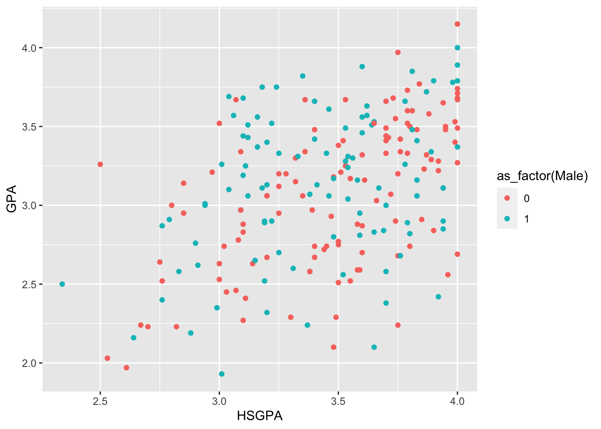
Exercise
Exercise
Discuss this plot with your neighbours. What do you like about this plot? What is it missing?
Tip
You can save a ggplot object by assigning it a name. Then, you can add onto this plot later. Notice that we are saving the base plot as an object (via base_plot_gg <-) so we can modify it throughout these examples. However, if we are only creating a plot to use once, there is no reason to save it as an object.
Titles, axes, and legend
X and Y axis labels
Let’s change the X and Y axes to be more informative. These aren’t the worst named variables, but you do need to infer that GPA is probably for college. Unless you go look at the information about the dataset – but we want our plot to speak for itself.
ggplot(data = FirstYearGPA) +
aes(
x = HSGPA,
y = GPA,
color = as_factor(Male)
) +
labs(
x = "High school GPA",
y = "First year college GPA"
) +
geom_point()
You can also do this using the scale() functions:
ggplot(data = FirstYearGPA) +
aes(
x = HSGPA,
y = GPA,
color = as_factor(Male)
) +
scale_x_continuous(name = "High school GPA") +
scale_y_continuous(name = "First year college GPA") +
geom_point()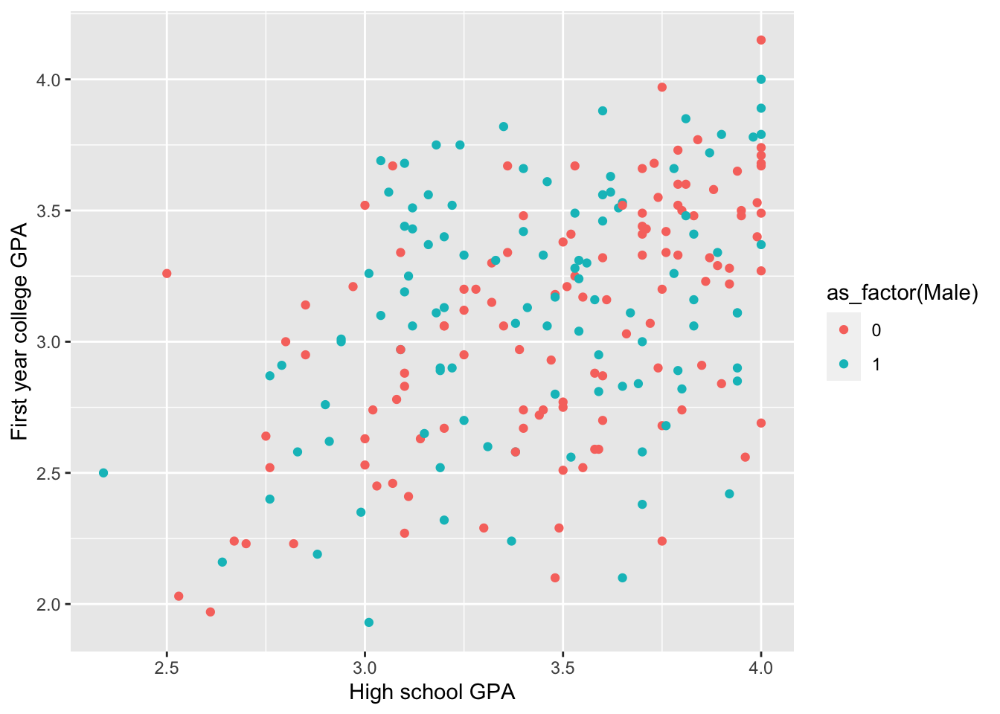
X and Y axis limits
Something else you might want to do sometimes to provide context for your plot and data is adjust the limits of the axes beyond the values of the data. In this case, it would make it easier to see if the values run the full (potential) range of the variable.
ggplot(data = FirstYearGPA) +
aes(
x = HSGPA,
y = GPA,
color = as_factor(Male)
) +
xlim(0, 4) +
ylim(0, 4) +
geom_point()Warning: Removed 1 rows containing missing values (`geom_point()`).
You can also do this using the scale() functions:
ggplot(data = FirstYearGPA) +
aes(
x = HSGPA,
y = GPA,
color = as_factor(Male)
) +
scale_x_continuous(limits = c(2, 4)) +
scale_y_continuous(limits = c(2, 4)) +
geom_point()Warning: Removed 3 rows containing missing values (`geom_point()`).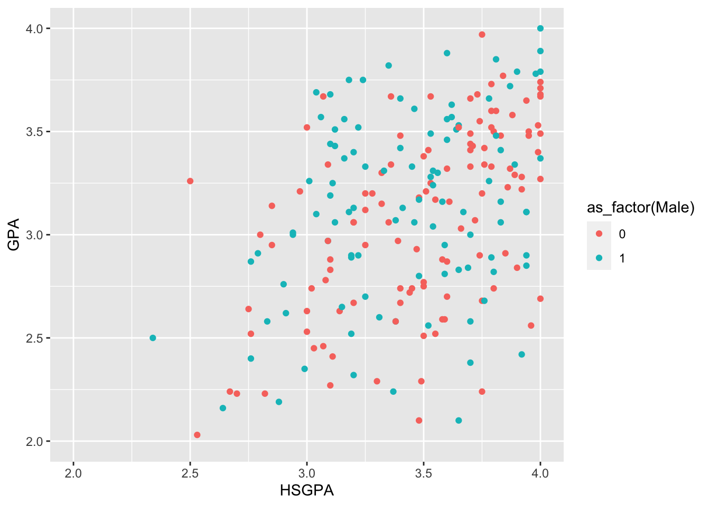
Either way, you can see that the values don’t run the full range of potential values. The X axis is probably because they collected data from college students and it’s harder to get into college if you have a very low GPA.
Legend title and labels
The way to change the legend title is not at all obvious. And there are multiple ways to do it.
The easiest thing to do is use the labs() function, but there’s not an argument that explicitly has to do with the legend. The argument ties back to how you mapped the variable in the original plot. You can also only change the title of the legend with this function, not the labels.
In base_plot_gg, we used color = as_factor(Male) to map color onto the variable Male. So we’ll use color here.
ggplot(data = FirstYearGPA) +
aes(
x = HSGPA,
y = GPA,
color = as_factor(Male)
) +
labs(color = "Gender") +
geom_point()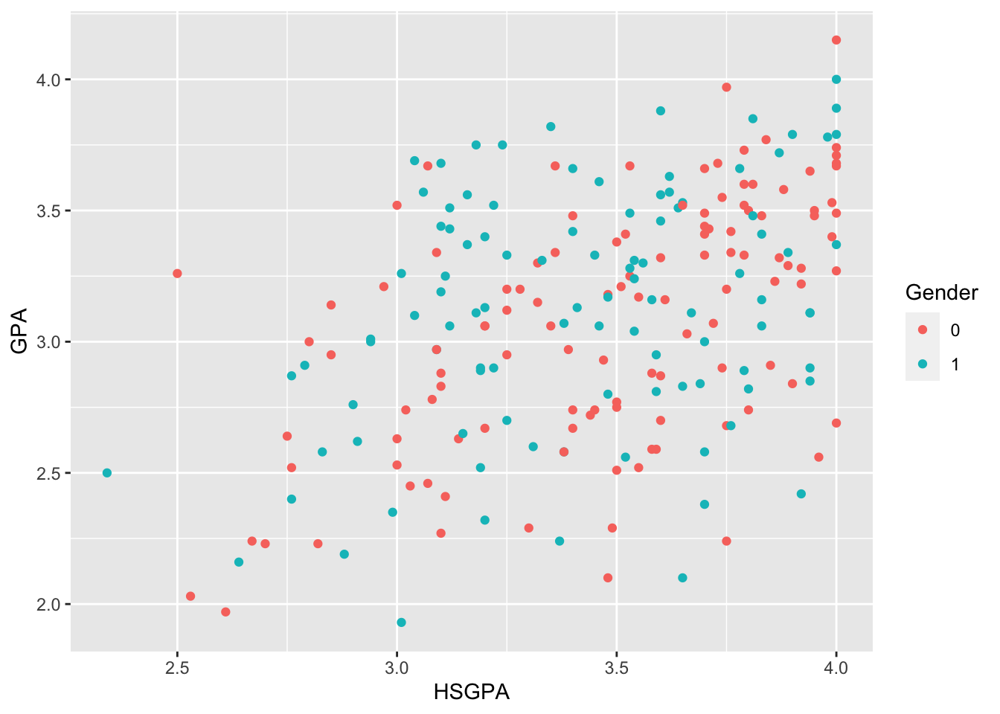
A more general way is to use the scale_color_discrete() function, which allows you to change the title and labels. There are several of these functions, all of the same form:
scale_color_discrete()scale_fill_discrete()scale_linetype_discrete()scale_shape_discrete()scale_size_discrete()scale_alpha_discrete()
Use the appropriate one for your variable type: if you mapped the variable to the fill attribute then use fill; if you mapped the variable to the shape attribute then use shape; etc.
ggplot(data = FirstYearGPA) +
aes(
x = HSGPA,
y = GPA,
color = as_factor(Male)
) +
scale_color_discrete(
name = "Sex",
labels = c("Female", "Male")
) +
geom_point()
ggplot(data = FirstYearGPA) +
aes(
x = HSGPA,
y = GPA,
color = as_factor(Male)
) +
scale_color_discrete(
name = "Sex",
labels = c("Female", "Male")
) +
geom_point()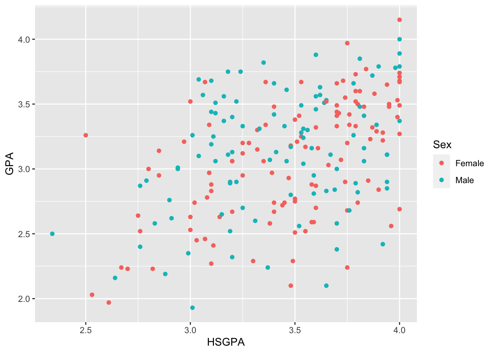
Colors
Color palettes
- set theme for whole document
- Add titles
- Changing axis, legend, and other labels
- Text, size, font, color, etc.
- Modifying background colors
- Rotating objects
- Ordering variable options (alphabetical, increasing, etc.)
Changing the color palette
The default colors are fine. They’re easy to distinguish (for me), but they might not work well for someone who is color blind.
Color blind friendly color palettes
viridis is a widely-used color palette package that has several colorblind-friendly (and black-and-white friendly) color palettes. The vignette for the package, which is kind of the article introducing it and how it works, is here: https://cran.r-project.org/web/packages/viridis/vignettes/intro-to-viridis.html
base_plot_gg +
scale_color_viridis(discrete = TRUE)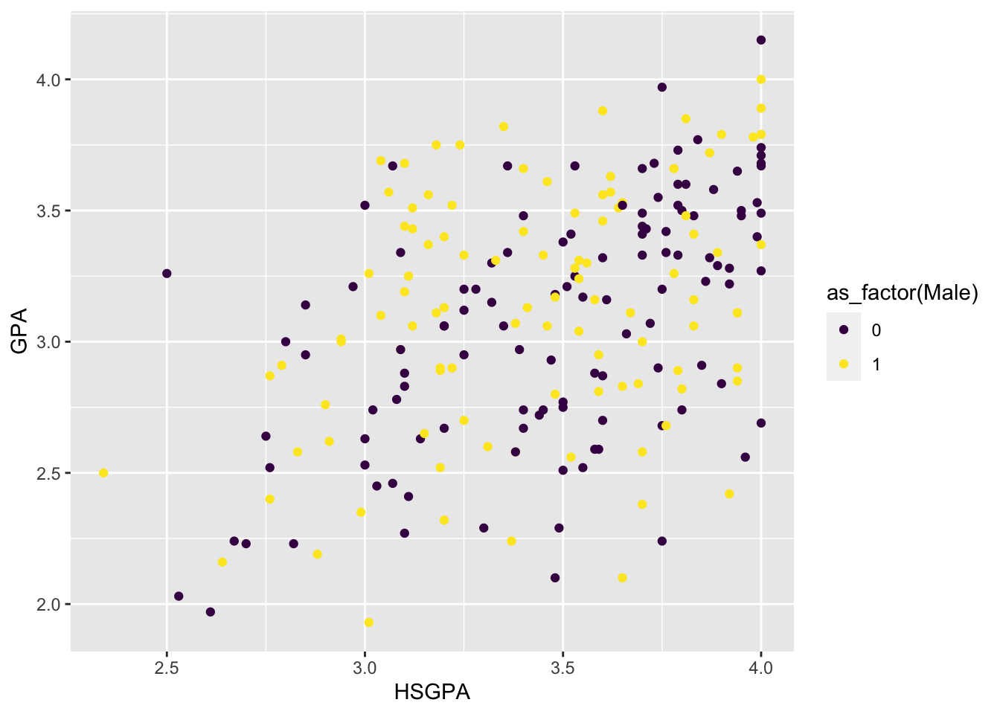
I find this a little hard to see. So maybe not the best choice.
Notice the warning:
## Scale for 'colour' is already present. Adding another scale for 'colour',
## which will replace the existing scale.
This means that scale_color_viridis() overwrites scale_color_discrete() that we used above to label the legend. Notice that the legend title and labels are gone. We can add those arguments back into the viridis function and get them back.
base_plot_gg +
scale_color_viridis(
discrete = TRUE,
name = "Sex",
labels = c("Female", "Male")
)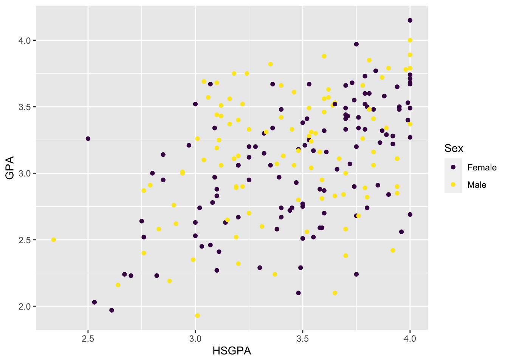
Just pick some colors
You can also just choose some colors from the default ones available in R. Here, I’m using some hex color values, but you can also use RBG or CMYK or default R ones (i.e, “blue” or “red”).
Again, I’m adding the legend arguments back to this function.
base_plot_gg +
scale_color_manual(
values = c("#999999", "#E69F00", "#56B4E9"),
name = "Sex",
labels = c("Female", "Male")
)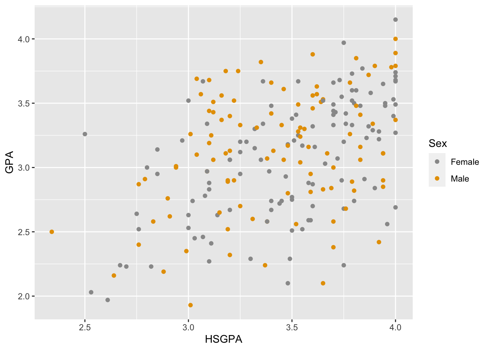
For a plot that uses the fill() option (like a bar plot), the command is fill_color_manual().
Some other color palettes
The RColorBrewer package has several pre-built color palettes that you can use. You can view all the RColorBrewer palettes using
display.brewer.all()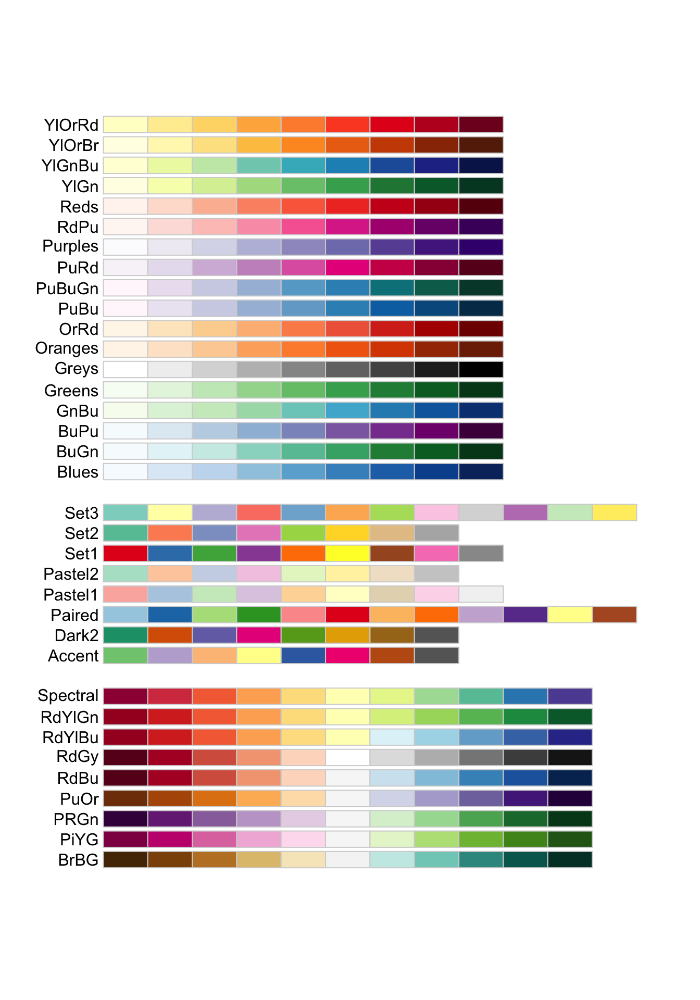
Here are just the palettes that work for color blind people:
display.brewer.all(colorblindFriendly = TRUE)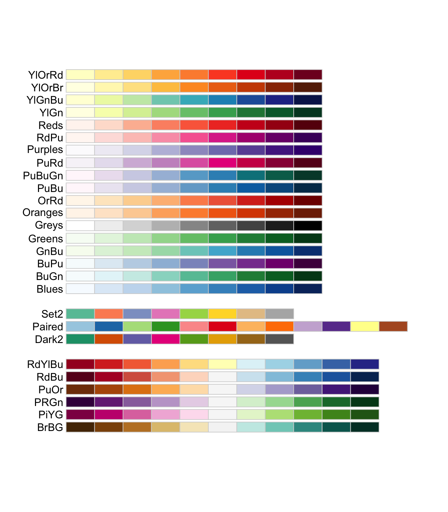
This is a qualitative palette, meaning that it works for nominal type variables. Again, adding the legend arguments back.
base_plot_gg +
scale_color_brewer(
palette = "Set2",
name = "Sex",
labels = c("Female", "Male")
)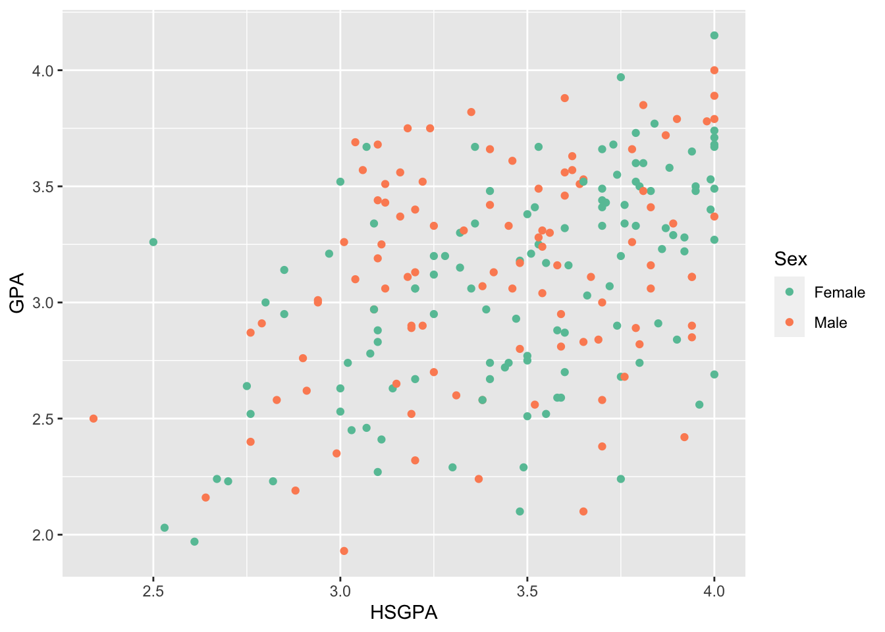
A diverging palette that goes from red to yellow to blue:
base_plot_gg +
scale_color_brewer(
palette = "RdYlBu",
name = "Sex",
labels = c("Female", "Male")
)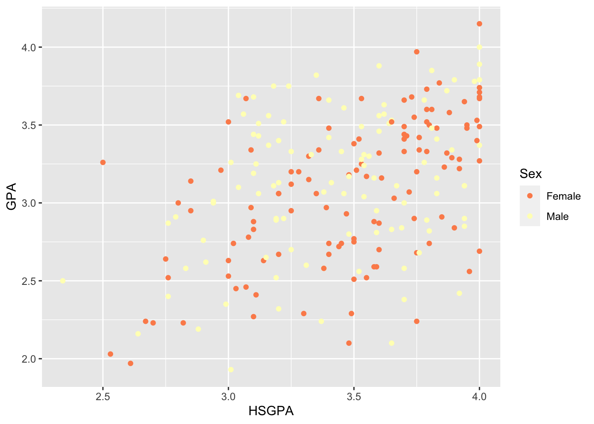
This is a sequential palette of blues:
base_plot_gg +
scale_color_brewer(
palette = "Blues",
name = "Sex",
labels = c("Female", "Male")
)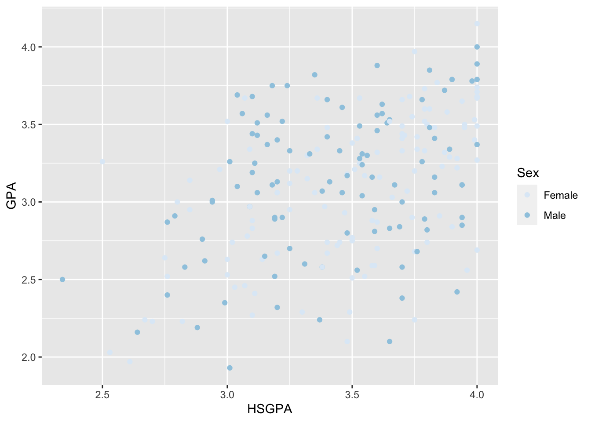
Very hard to see the lighter dots on the grey background.
Color based on continuous variable
If you wanted to color based on a continuous variable, you would get many more colors than just the two here. Imagine that, instead of gender, we wanted to color the points based on how many social sciences units they enrolled in (SS in the dataset).
base_plot_cont_gg <-
ggplot(data = FirstYearGPA) +
aes(
x = HSGPA,
y = GPA,
color = SS
) +
labs(
title = "First year college GPA versus high school GPA",
x = "High school GPA",
y = "First year college GPA",
color = "Social studies units"
) +
geom_point()
base_plot_cont_gg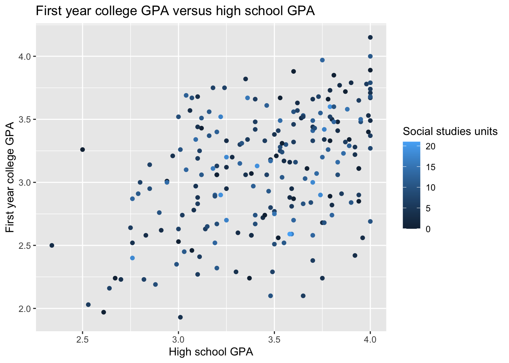
Above is the default color scheme from ggplot. Let’s create a gradient for the SS variable, starting at blue and increasing to red. The function scale_color_gradient() lets you specify just the ends and it fills in between.
base_plot_cont_gg +
scale_color_gradient(low = "blue", high = "red")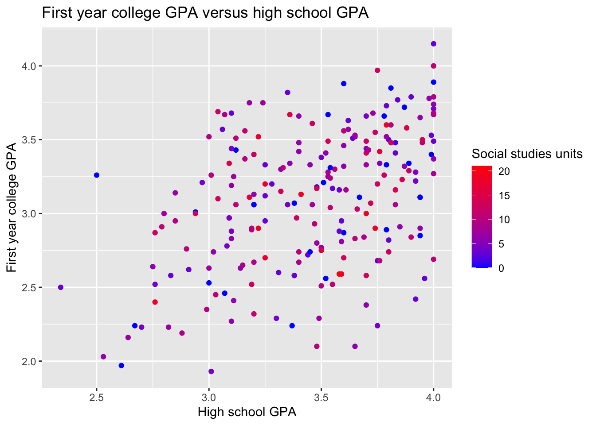
Notice that the continuous variable doesn’t need any edits to the legend labels, so the we don’t have to repeat those options like we did for the plot with the gender variable.
Color fill commands
When you’re using plots that fill rather than create lines or points, the commands are similar but include fill in them. Here is an unedited bar plot that uses one of the RColorBrewer color palettes.
ggplot(data = FirstYearGPA) +
aes(
x = as_factor(Male),
fill = as_factor(FirstGen)
) +
scale_fill_brewer(
palette = "Set2",
name = "First generation status",
labels = c("Not 1st gen", "1st gen")
) +
scale_x_discrete(
name = "Gender",
labels = c("Female", "Male")
) +
labs(y = "Frequency") +
geom_bar(position = "dodge")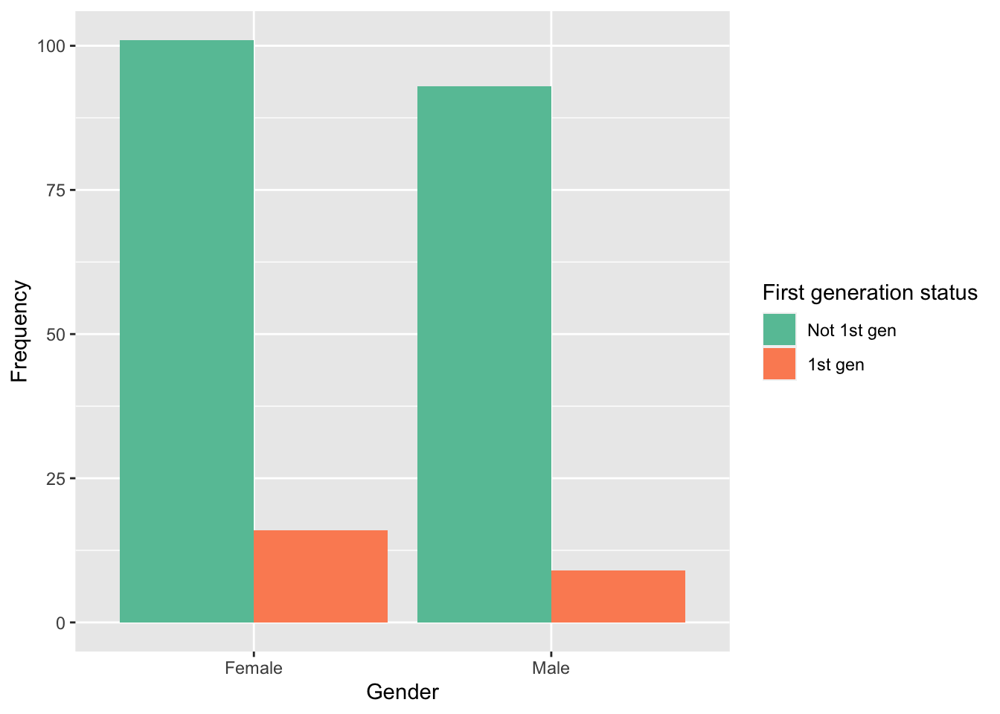
Notice that I added labels to the (discrete) X axis and (continuous) Y axis too.
Adding annotations
Let’s return to our base plot of first year college GPA versus high school GPA. We can add annotations to the plot to make things more clear or to point out specific aspects of the plot. For example, we can highlight the area of the plot that includes high school honor roll students, those with GPA > 3.8.
base_plot_gg +
annotate(
geom = "rect",
xmin = 3.8,
xmax = 4.01,
ymin = 2.0,
ymax = 4.2,
fill = "red",
alpha = 0.2
) +
annotate(
geom = "text",
x = 3.4,
y = 4.1,
label = "High school honor roll students \n (GPA > 3.8)"
)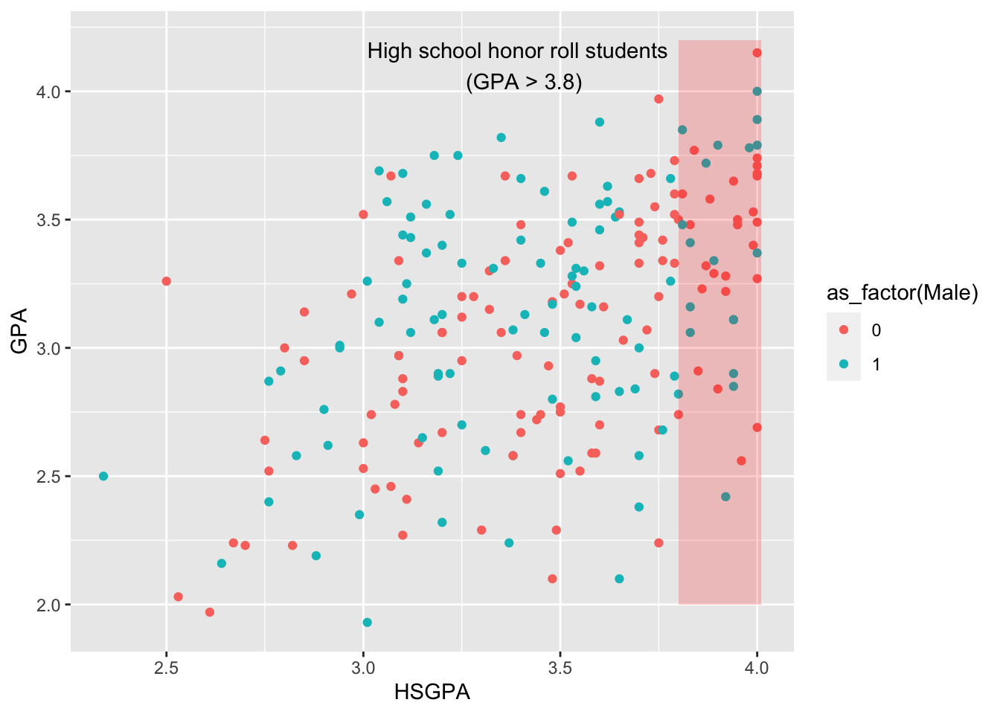
This is pretty basic and built in as an annotation.
What about a line indicating academic probation?
base_plot_gg +
annotate(
geom = "segment",
x = 2.25,
xend = 4.25,
y = 2.5,
yend = 2.5,
linetype = "dashed",
color = "blue"
) +
annotate(
geom = "text",
x = 2.95,
y = 4.5,
label = "Students below the line are on probation"
)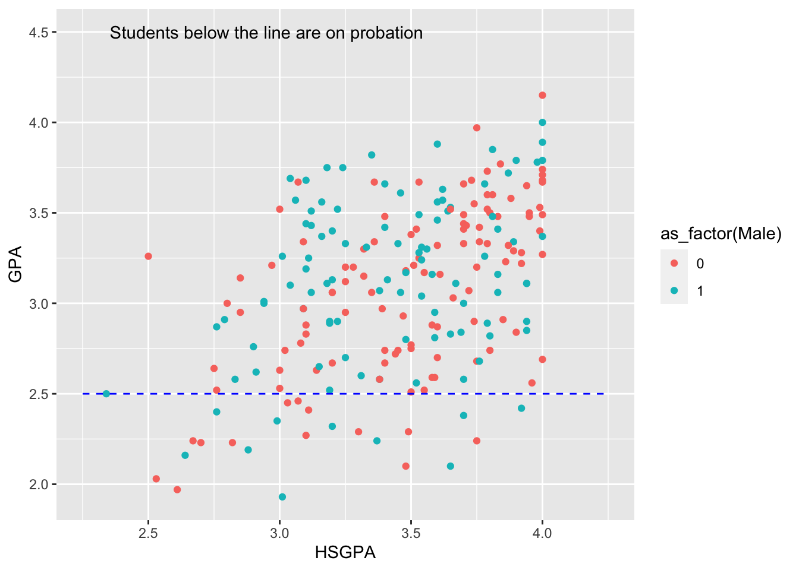
We can add a line indicating equal GPAs in high school and college and add text explaining why that line is important.
base_plot_gg +
annotate(
geom = "segment",
x = 2.25,
xend = 4.25,
y = 2.25,
yend = 4.25,
linetype = "dashed",
color = "blue"
) +
annotate(
geom = "text",
x = 3.5,
y = 2,
label = "Students below the line did better in high school"
) +
annotate(
geom = "text",
x = 2.9,
y = 4.0,
label = "Students above the line did better in college"
)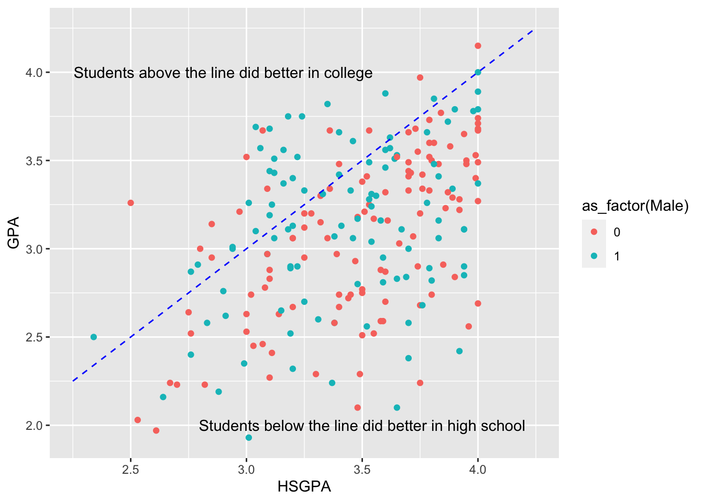
Another use of the line segment could be to indicate which groups are significantly different from one another in a bar plot.
ggplot(data = FirstYearGPA) +
aes(
x = Male,
fill = as_factor(FirstGen)
) +
scale_fill_brewer(palette = "Set2") +
geom_bar(position = "dodge") +
annotate(
geom = "segment",
x = -0.25,
xend = 0.25,
y = 105,
yend = 105,
color = "black"
) +
annotate(
geom = "text",
x = 0,
y = 108,
size = 8,
label = "*"
)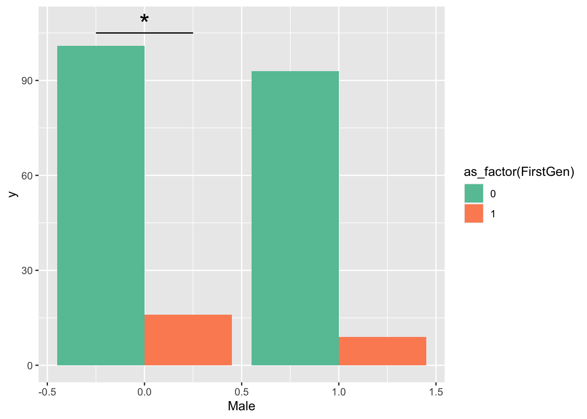
This doesn’t look as good as it could, so let’s clean up the axes and labels.
ggplot(data = FirstYearGPA) +
aes(
x = as_factor(Male),
fill = as_factor(FirstGen)
) +
scale_fill_brewer(
palette = "Set2",
name = "First generation status",
labels = c("Not 1st gen", "1st gen")
) +
scale_x_discrete(
name = "Sex",
labels = c("0" = "Female", "1" = "Male")
) +
labs(y = "Frequency")+
geom_bar(position = "dodge") +
annotate(
geom = "segment",
x = 0.75,
xend = 1.25,
y = 105,
yend = 105,
color = "black"
) +
annotate(
geom = "text",
x = 1,
y = 108,
size = 8,
label = "*"
)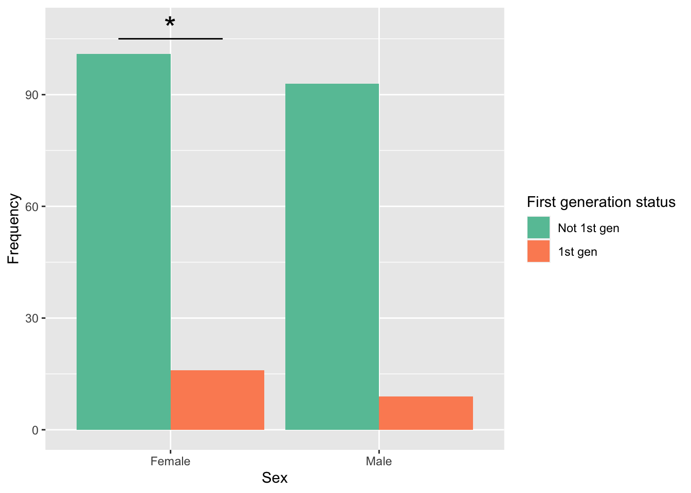
Notice a couple of things here:
- I had to specify that the gender variable was categorical with
as_factor(Male). If I didn’t, the X axis labels didn’t show up at all (axis label or category labels). - In
scale_x_discrete(), I specified which category the labels go with:"0" = "Female", "1" = "Male". This is not actually required but may be helpful. - Notice the location of the line and star. I had to adjust their horizontal locations because factors in R do unexpected things: ggplot now places the bars at x = 1 and 2 instead of 0 and 1 because R is interpreting these factors as the numbers 1 and 2. We will discuss this more when we talk about atomic type coercion later this semester.
Themes
Built-in themes
Black and white theme:
base_plot_gg +
theme_bw()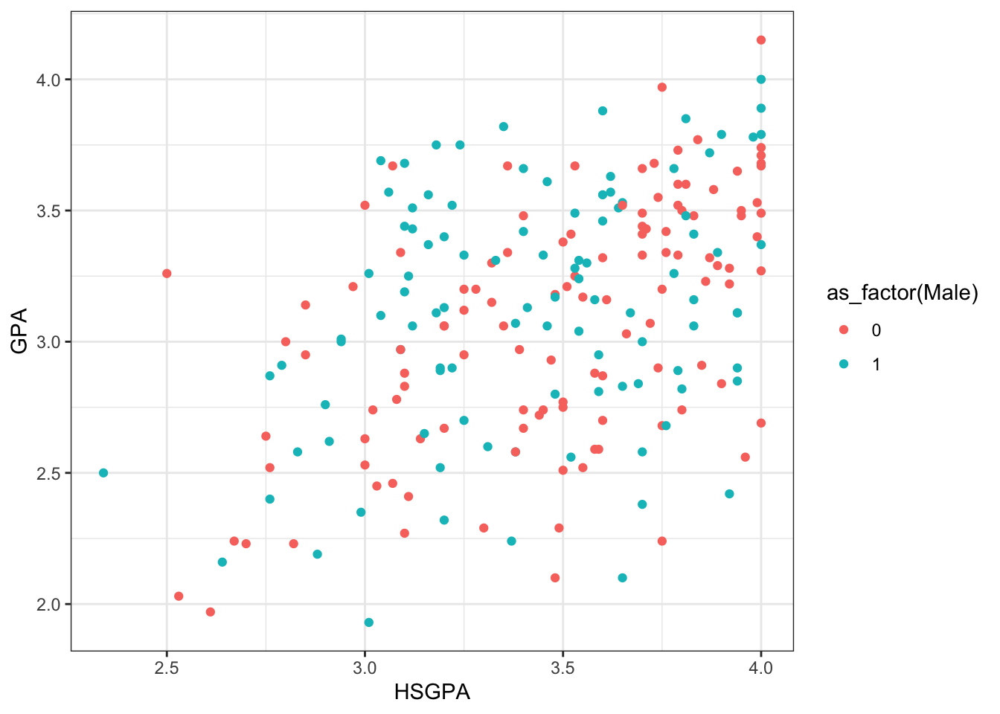
Minimal theme:
base_plot_gg +
theme_minimal()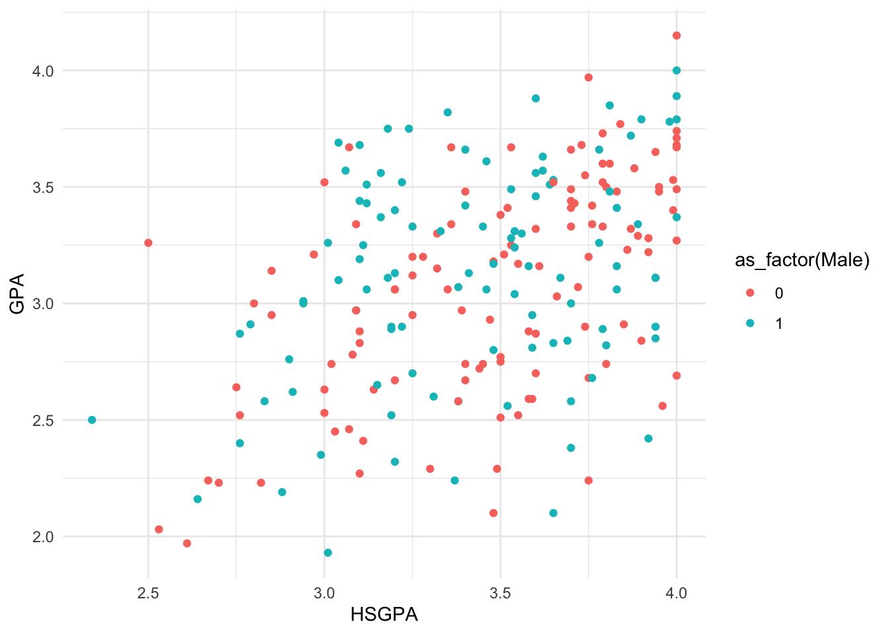
Classic theme:
base_plot_gg +
theme_classic()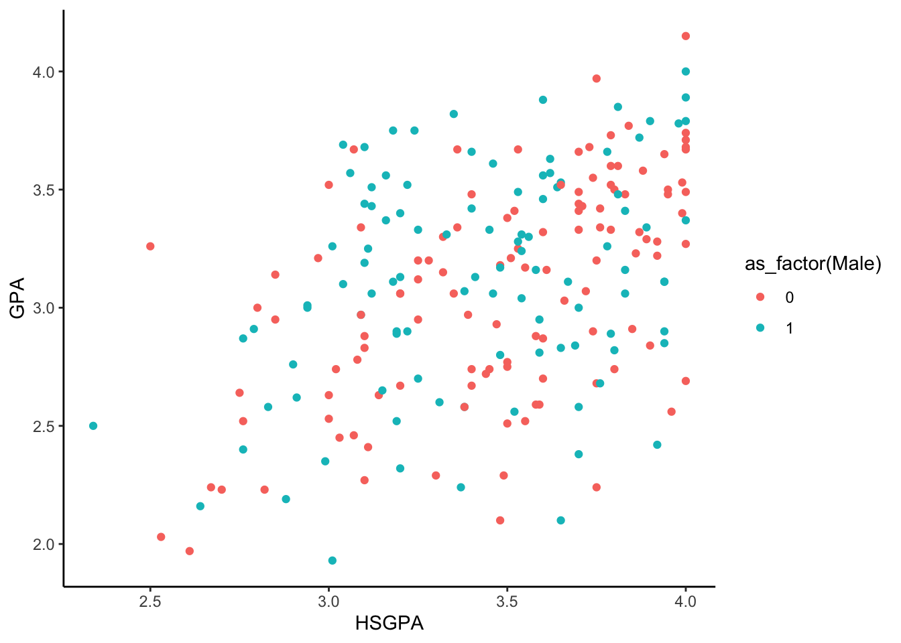
Package themes
There is an APA theme in the jtools package, which was installed and loaded above. As of today, it is APA Publication Manual Version 6 compliant.
base_plot_gg +
theme_apa()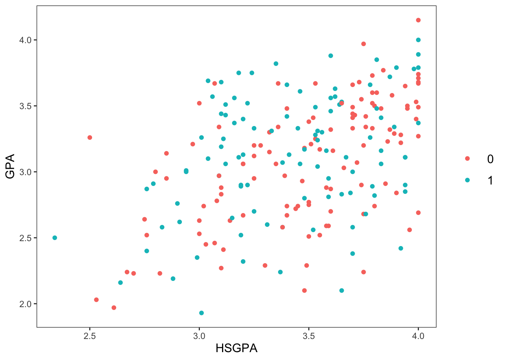
What if I want my plot to look like it could be in the Wall Street Journal? (from the ggthemes package)
base_plot_gg +
theme_wsj()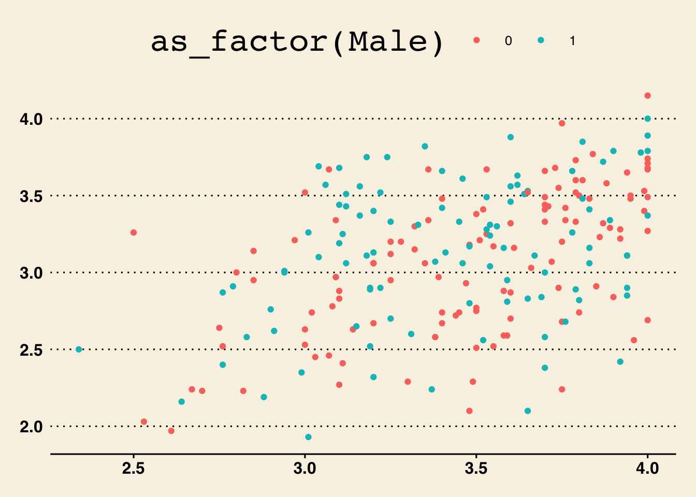
Well, maybe not ready for prime time there. They sure like LARGE titles. Our title has been mostly chopped off.
What about the Economist? (also ggthemes)
base_plot_gg +
theme_economist()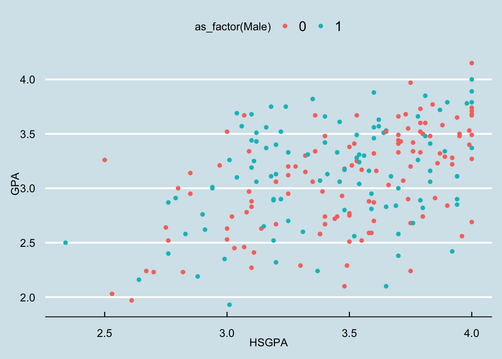
Editing your own theme
You can also change individual parts of the plot yourself. Maybe you just want all the text to be a little larger in a theme. This is good for presentations—the fonts are always a little too small to read well.
base_plot_gg +
theme_bw(base_size = 16)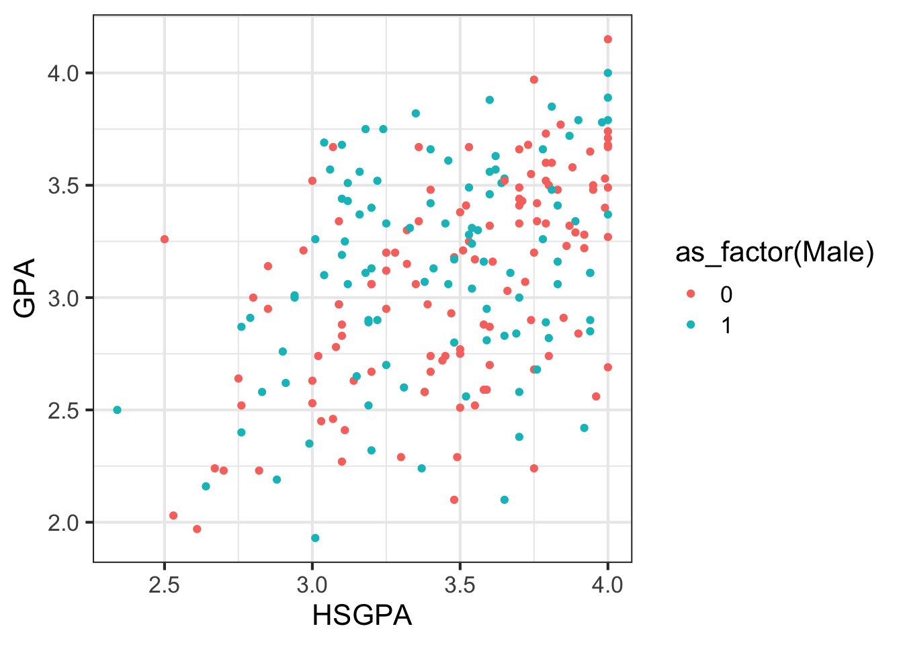
How about changing the background of the plot (and the gridlines) to black to make it really striking?
base_plot_gg +
theme(
panel.background = element_rect(fill = "black"),
panel.grid = element_line(color = "black")
)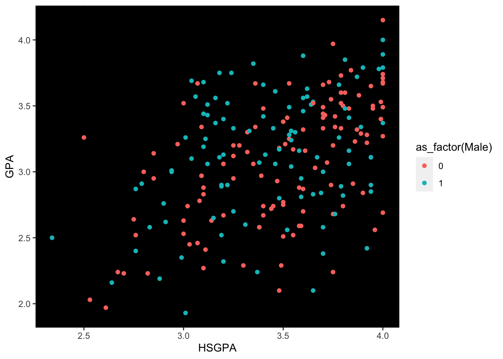
All of the objects you can modify are listed here: https://ggplot2.tidyverse.org/reference/theme.html.
Exercises
Exercises
- Change
base_plot_ggto have larger font throughout, purple points for females, green points for males, a white background inside the plot area, and a grey background outside the plot area. Do this layer by layer. Take your time. - Discuss with your neighbour the strengths and weaknesses of this plot. Would you be proud to submit this plot to a journal? What could you do to improve it?